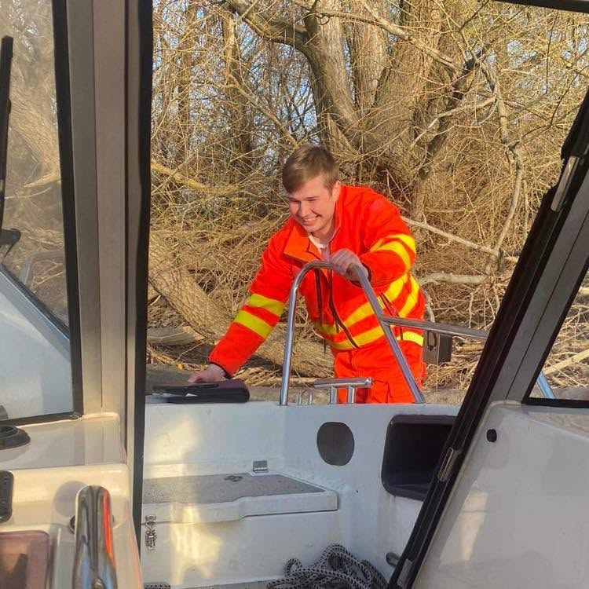

Business analytics · Low-code · Commercial Domain
Hi, I'm Marcell.
Looking forward to meeting in person :)
I started out as a citizen developer, automating simple workflows and creating dashboards to make the work of my team easier. I'm eager to learn at HWR and take my skills and strengths to the next level.

Work experience
| Role & organisation | Period | Location |
|---|---|---|
Junior Trade CoordinatorBayer · Full-time |
Feb 2025 – Present | Budapest, HungaryHybrid |
Virtual Engagement / Neuroscience Intern (Fixed Term)Medtronic · Internship |
Aug 2024 – Jan 2025 | Budapest, HungaryHybrid |
Trade Marketing TraineeBayer · Internship |
Feb 2023 – Jun 2024 | Budapest, Hungary |
Studies
| Institution & degree | Period | Specialization & grade |
|---|---|---|
Corvinus University of BudapestBachelor's degree, Business and Management |
Sep 2022 – Jan 2026 | Digital Business SpecializationGrade: 92.4%BSc thesis (PDF) ↗ |

Fun fact 🚑
After high school, I started out as an Emergency Medical Technician.
My interactive map
Take a look around.